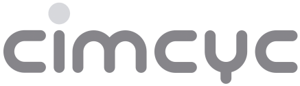

Estudio de Atención Social
-
Desde el grupo de Neurociencia Cognitiva te agradecemos por participar en nuestro estudio de Atención Social.


-
El estudio consiste en realizar una tarea sencilla en ordenador. Solamente dura 20 minutos, y se te asignarán 0.1 créditos para usarlo en cualquier curso de psicología experimental.
Estamos ubicados en el Laboratorio 2 del CIMCYC
-
Para participar solo tienes que ingresar en la plataforma sona con tus credenciales y buscar el experimento:
En caso de que no tengas una cuenta puedes crearla rápidamente: crear cuenta
-
Si tienes cualquier pregunta puedes escribir a:
greta.castellanelli@studenti.unipd.it